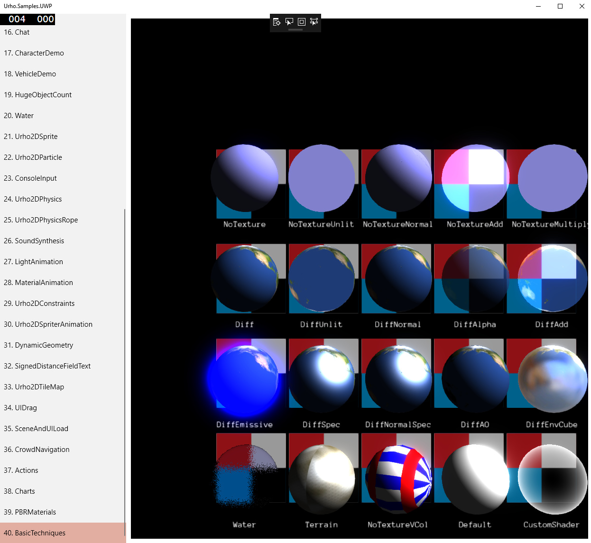
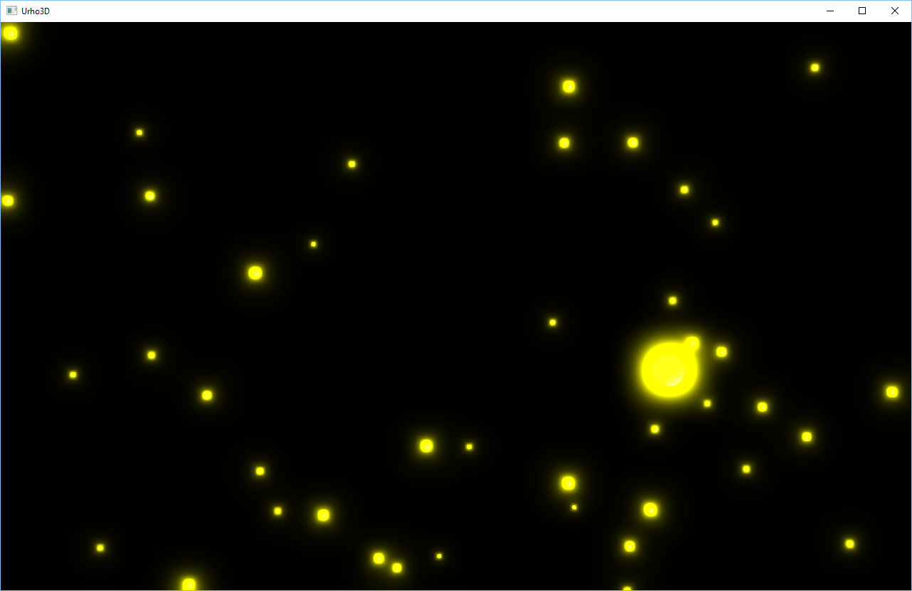
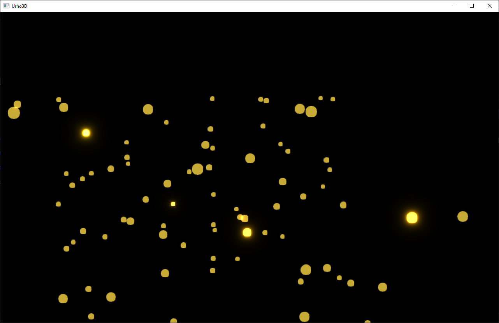
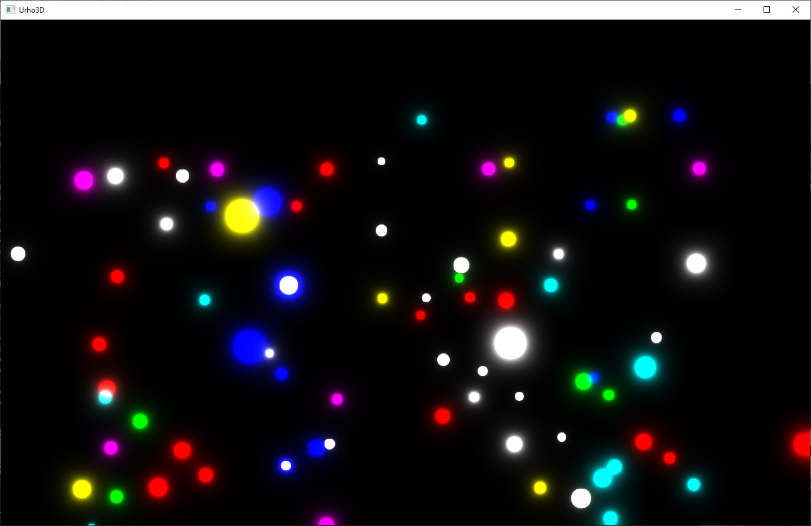

lheller
Hi!
Is it possible somehow add a spot light inside a sphere and make the sphere act like a light source?
Edit: Point light!


Hi!
Is it possible somehow add a spot light inside a sphere and make the sphere act like a light source?
Edit: Point light!

It seems to me it should work putting a point light inside a sphere. But I’m a beginner and don’t know.
You can use emissive material and bloom and bloomhdr to make the effect more dramatic and noticed.
I sure wish people would answer questions instead of going off on tangents unrelated to the question. It makes this board useful for those to come in the future who are trying to solve problems. Movie comments make me want to look elsewhere and not on this board.
Here’s an example, note the DiffEmissive. This is with a lit material and light outside the sphere.

Also check out the billboards sample and the use of lights .

@lheller Do you mean area lights or would a light mask (or even near clip) be enough?

Create a node and add a StaticModel and a Light component to it. For the staticModel use Sphere.mdl resource and that’s about it.

Why would you put a spotlight (which has Direction) inside a sphere, then try to model a spherical light, when a point light represents a light with “all” directions (a spherical light)?
Are you looking for a spherical light which is more intense in a particular direction?
I’m confused

If I’m right about your wanting to model a spherical light which is more intense in some direction, you could try combining some basic lighting models - first try mixing a directional light with a spherical light, and if it’s not good enough, try mixing a spotlight, and a spherical light, connected to the same parent node (so having the same world position).
What I want to reach is to create something like a star (a celestial object).
As we know, star is a light emitting object.
Anyway, the below works well without any light (UrhoSharp code):
var sphere = StarNode.GetOrCreateComponent<Sphere>();
var material = Material.FromColor(Color.White);
material.CullMode = CullMode.None;
material.LineAntiAlias = true;
material.SetTechnique(0u, CoreAssets.Techniques.NoTextureVColAddAlpha);
sphere.SetMaterial(material);
Anybody a solution with point light?
Hello, yep, point light is what I want here.
But see my “solution” without any light.
I like pictures - even bad ones - pictures are more clear, generally, than a thousand words - please show me what you see, and just after that, describe again what your goal is, I will try to do it in my project just to make sure it works before i reply.
My goal is something like this:

I am developing a planetarium application where I also want to simulate the star
magnitude
.
The idea is to render small spheres with point light inside where the light range/brightness is set based on star magnitude value.
stop using spotlights, switch to point lights, you’ll be fine, and I’m here to help

Question regarding these lights: do you need these starts to light some objects near it (planets and so on)? Or do you only need the starts only?
If you do not need to light any object by these starts and you just want this bloom effect around the spheres than you don’t need any light source inside the spheres (and you will save a lot of performance) - only special material is required for these starts and bloom post-processing effect.
I already switched to point lights.
But now I think
@guk_alex
suggested a better solution.
Hello @guk_alex
No, I don’t need to light near objects.
Can u pls give a short example only with one sphere and such material and that bloom effect?
many hands, make light work
I3DB mention it here:
Sphere as light source
Material you looking for is DiffEmissive. And the effect is Bloom or BloomHDR.
If your stars remain without texture you might as well use billboards instead of spheres for maximum performance.
@Modanung
OK, but how to make one billboard component look like a sphere (or at least a circle) ?
Simply assign a material with a circle as texture - which can be made in a few clicks using GIMP - and some unlit or additive Diff technique to the billboards.
@Modanung
Did it, and used DiffAdd technique for billboardset’s material.
But unfortunately only some of the circles are glowing. Like on the screenshot.

I need all the circles glowing.
Any idea?
Maybe you could incorporate the glow into the circle image? Or use two billboards per star, one unlit opaque and one additive.
@Modanung
Two billboards per star finally solved the problem: All circles are glowing!
But now there is another question (problem?): I need various colors for circles, in other words for each billboard in billboardset. Is it possible to do this for the same billboardset?
Yes, this is perfectly possible by using vertex colors. Simply set the billboards’
color_
s and then
Commit()
. Make sure your textures are in grisaille - since it will be
multiplied
with the vertex color - and the materials’ techniques should be VCol ones.
@Modanung
Thanks for help, now everything works as expected!


This solution seems really inefficient to me. Do the stars need to additivly blend for some reason? Why not just use alpha scissoring and an emissive texture? Sorry to necro an old thread BTW, but this seems like a really silly solution, unless there is a particular reason it needs to be done like this.
Heck, you just need one texture used in both albedo and emssive and to use the DiffEmissive technique, though ideally it’s an unlit technique which has a strength float to multiply the diffuse color by. Actually shouldn’t be hard to make. I’ll do it RN.
Hi!
Please if you can provide an example code (and also a texture), I would appreciate it.
BR,
Ladislav
Already working on it lol.
What I need is to make stars glowing like on the above screenshot.
And you are using HDR, right?
Using BloomHDR, yes.
Ok, good. That means I’m right about this then. Next post will be a video of what I do.
Ok, breaking my promise, but I remember there being a bug with a few of the post effects, including both bloom variants (LDR & HDR) where the naming of some of the uniforms was messed up in the post effect XML. Is this fixed currently? If not I’ll just fix it myself (it’s honestly a pretty simple issue to remedy) but if it is fixed I want to make sure the build of the engine I’m using has these fixes. @Modanung You’d probably know.
Anyway, you are still welcome to post a super efficient and fast way to produce glowing stars like on the above screenshot

BTW you also think, the BillboardSet is the best way ?
Yes. Instead of rendering a sphere which has, at least 8 tris, a billboard is a quad which is 2 tris. I’ve done some experimenting in another engine with shading a billboard to make it look like a 3D object.
I found the issue on github, it’s not fixed. https://github.com/urho3d/Urho3D/issues/2542
@GoldenThumbs
Maybe you could review the PR?
https://www.youtube.com/watch?v=gOG2Vy-66gY so this is what I got to before I fell asleep, but I’m going to try to make the bloom look better.
Ok, so all the shader stuff I did seems to be pointless. You get the same result with the bloom even if values above 1 are used. HDR stuff doesn’t seem to effect BloomHDR, from what I can see at least… So, in conclusion, just use an unlit material. That’s it. I’d still use “ALPHAMASK” in the pixel defines, unless you want some gradient effect with alpha.
This does kind of lead to a question… Why use bloom at all? Why not just use a circular gradient with an unlit material and alpha blending?
CORRECTION! Turns out HDR Rendering was turned off in my test, I turned it on and everything worked like it should. https://github.com/GoldenThumbs/Urho3d_HDR_Glow/tree/master/CoreData/Shaders
If anybody is interested, how I did, then here are the steps:
Example animated 3D starfield with glowing stars:

Thank you, this is what I was missing to give different colors to each Billbord item.
{kind=link}
{kind=link}